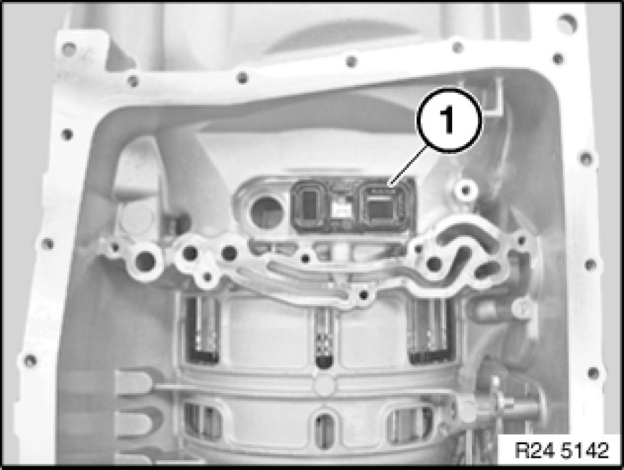
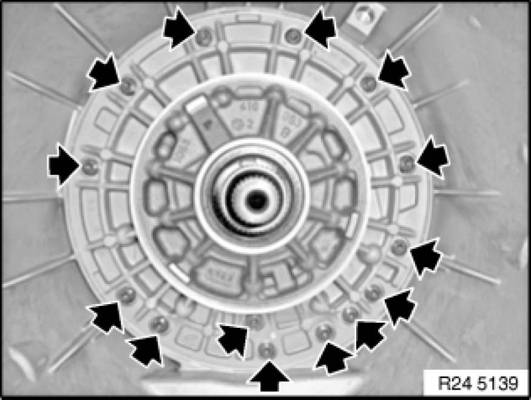
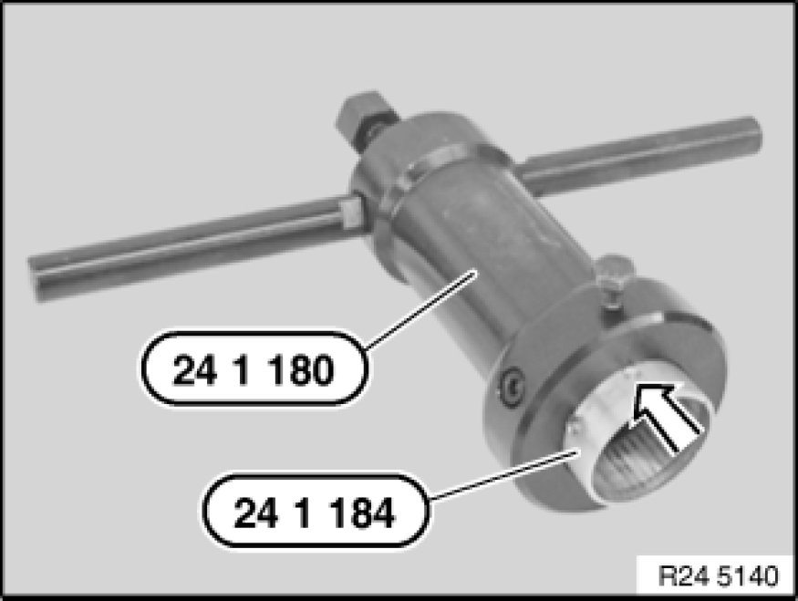
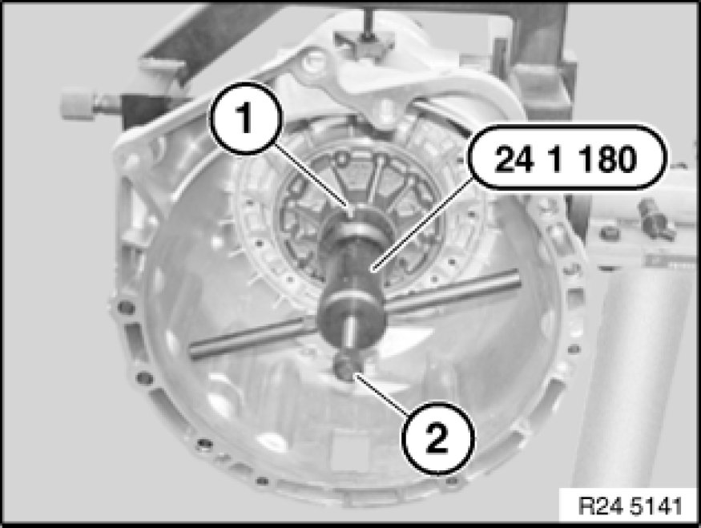
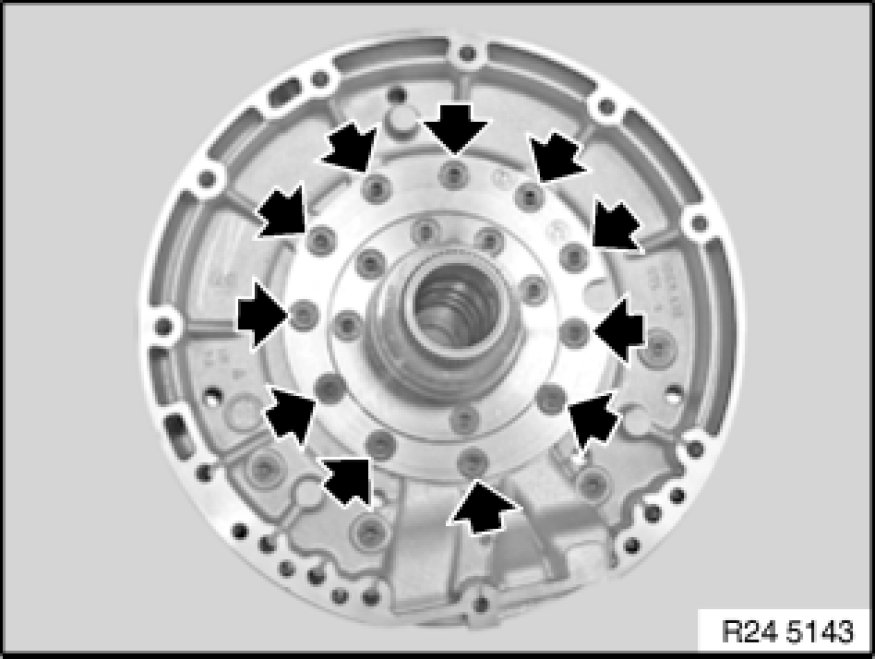
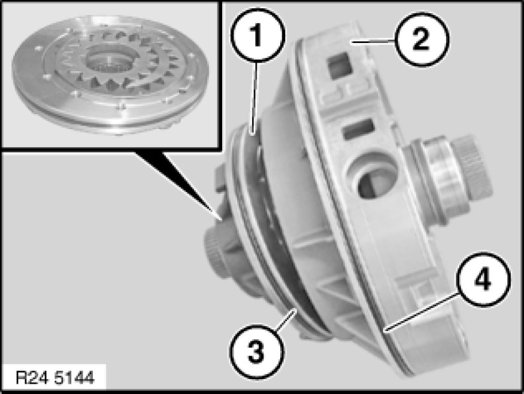

Fluid Pump: Service and Repair
24 31 575 - Replacing oil pump O-rings (GA6HP26/19Z)

Special tools required:
- 24 1 180 24 1 180 Fixture
- 24 1 184 24 1 180 Fixture

Important!
After completion of work, check transmission fluid level.
Use only approved transmission oil.
Failure to comply with this instruction will result in serious damage to the transmission.

Necessary preliminary tasks:
- Remove automatic transmission
- Secure transmission with transmission holding bridge Universal Transmission Retaining Bridge on assembly stand
- Remove torque converter
- Remove mechatronics

Remove adapter (1).
Installation Note:
Note installation position.

Release screws.
Tightening torque 24 31 3AZ [1][2]Fluid Pump, A/T.

Slide special tool 24 1 184 24 1 180 Fixture completely into extractor 24 1 180 24 1 180 Fixture.

Attach special tool 24 1 180 24 1 180 Fixture and secure with screw (1).
Insert screw (2) and release oil supply unit from transmission housing.

Release screws.
Tightening torque 24 31 1AZ [1][2]Fluid Pump, A/T.

Detach cover (1) from pump housing (2).
Replace O-rings (3 + 4).
Installation Note:
Pay attention to installation position of gears during disassembly.